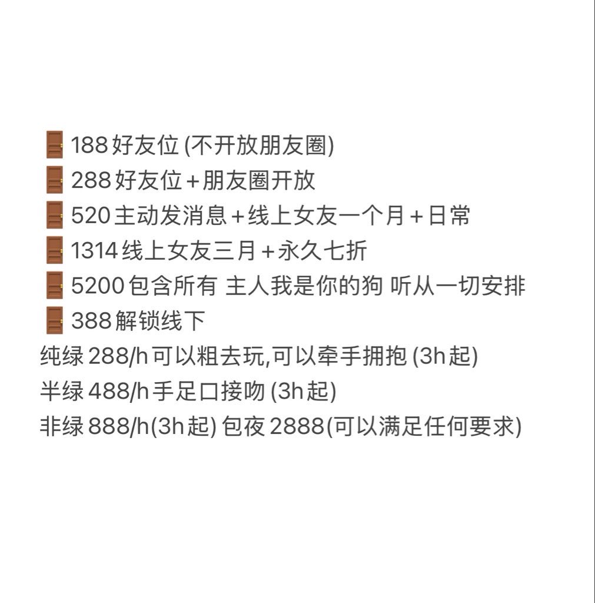

小酸2.0（寻回推友中）
@Dodioibs
RT @raven_kitzan: Hello 我是橙子🍊
07 168 47kg 全国🉑✈️
期待有宝宝入🚪
不入🚪的宝宝请勿打扰 生活不易 保持善意
欢迎宝宝们互转互fo
#金主爸爸 #电子女友 #门槛 #足控 #非绿 #反差

橙子🍊
@raven_kitzan
Hello 我是橙子🍊
07 168 47kg 全国🉑✈️
期待有宝宝入🚪
不入🚪的宝宝请勿打扰 生活不易 保持善意
欢迎宝宝们互转互fo
#金主爸爸 #电子女友 #门槛 #足控 #非绿 #反差 https://t.co/Oe0zGdSkBe